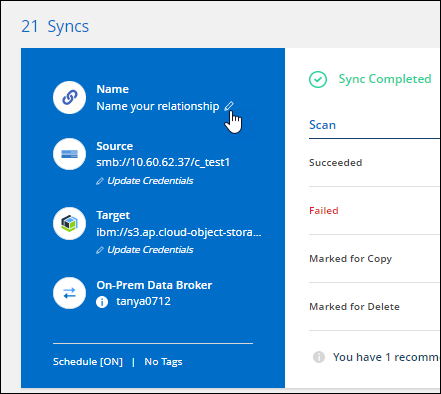
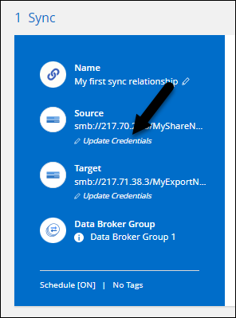

Demander de modifier un document
Demander de modifier un document Modifier sur GitHub
Modifier sur GitHub Guide des contributeurs
Guide des contributeursQuelles sont les nouveautés de Cloud Sync
Contributeurs

Découvrez les nouveautés de Cloud Sync.
11 décembre 2022
Filtrez les répertoires par nom
Un nouveau paramètre exclure les noms de répertoire est maintenant disponible pour les relations de synchronisation. Les utilisateurs peuvent filtrer un maximum de 15 noms de répertoire depuis leur synchronisation.
Prise en charge supplémentaire d’Amazon S3 et de ONTAP S3 Storage
Cloud Sync prend désormais en charge des relations de synchronisation supplémentaires pour AWS S3 et ONTAP S3 Storage :
-
AWS S3 vers le stockage ONTAP S3
-
Stockage ONTAP S3 vers AWS S3
30 octobre 2022
Synchronisation continue de Microsoft Azure
Le paramètre Continuous Sync est désormais pris en charge depuis un compartiment de stockage Azure source vers un stockage cloud via un courtier de données Azure.
Après la synchronisation initiale des données, Cloud Sync écoute les modifications apportées au compartiment de stockage Azure source et synchronise en continu les modifications apportées à la cible lorsqu’elles se produisent. Ce paramètre est disponible lors de la synchronisation à partir d’un compartiment de stockage Azure vers le stockage Azure Blob, CIFS, Google Cloud Storage, IBM Cloud Object Storage, NFS et StorageGRID.
Le courtier de données Azure a besoin d’un rôle personnalisé et des autorisations suivantes pour utiliser ce paramètre :
'Microsoft.Storage/storageAccounts/read',
'Microsoft.EventGrid/systemTopics/eventSubscriptions/write',
'Microsoft.EventGrid/systemTopics/eventSubscriptions/read',
'Microsoft.EventGrid/systemTopics/eventSubscriptions/delete',
'Microsoft.EventGrid/systemTopics/eventSubscriptions/getFullUrl/action',
'Microsoft.EventGrid/systemTopics/eventSubscriptions/getDeliveryAttributes/action',
'Microsoft.EventGrid/systemTopics/read',
'Microsoft.EventGrid/systemTopics/write',
'Microsoft.EventGrid/systemTopics/delete',
'Microsoft.EventGrid/eventSubscriptions/write',
'Microsoft.Storage/storageAccounts/write'4 septembre 2022
Assistance Google Drive supplémentaire
-
Cloud Sync prend désormais en charge des relations de synchronisation supplémentaires pour Google Drive :
-
Google Drive vers les serveurs NFS
-
Google Drive vers les serveurs SMB
-
-
Vous pouvez également générer des rapports pour les relations de synchronisation incluant Google Drive.
Amélioration de la synchronisation continue
Vous pouvez maintenant activer le paramètre de synchronisation continue sur les types de relations de synchronisation suivants :
-
Un compartiment S3 vers un serveur NFS
-
Google Cloud Storage sur un serveur NFS
Notifications par e-mail
Vous pouvez désormais recevoir des notifications Cloud Sync par e-mail.
Pour recevoir les notifications par e-mail, vous devez activer le paramètre Notifications sur la relation de synchronisation, puis configurer les paramètres alertes et notification dans BlueXP.
31 juillet 2022
Google Drive
Vous pouvez désormais synchroniser les données d’un serveur NFS ou SMB vers Google Drive. « Mon lecteur » et « lecteurs partagés » sont pris en charge en tant que cibles.
Avant de créer une relation de synchronisation incluant Google Drive, vous devez configurer un compte de service disposant des autorisations requises et d’une clé privée. "En savoir plus sur les exigences de Google Drive".
Prise en charge supplémentaire d’Azure Data Lake
Cloud Sync prend désormais en charge des relations de synchronisation supplémentaires pour Azure Data Lake Storage Gen2 :
-
Amazon S3 vers Azure Data Lake Storage Gen2
-
Stockage objet cloud IBM sur Azure Data Lake Storage Gen2
-
De StorageGRID à Azure Data Lake Storage Gen2
Nouvelles façons de configurer les relations de synchronisation
Nous avons ajouté des moyens supplémentaires pour configurer les relations de synchronisation directement à partir de BlueXP Canvas.
Glisser-déposer
Vous pouvez maintenant configurer une relation de synchronisation à partir du Canvas en faisant glisser et en déposant un environnement de travail sur un autre.

Configuration du panneau droit
Vous pouvez maintenant configurer une relation de synchronisation pour le stockage Azure Blob ou pour Google Cloud Storage en sélectionnant l’environnement de travail dans Canvas, puis en sélectionnant l’option de synchronisation dans le panneau de droite.

3 juillet 2022
Prise en charge d’Azure Data Lake Storage Gen2
Vous pouvez désormais synchroniser les données d’un serveur NFS ou SMB vers Azure Data Lake Storage Gen2.
Lors de la création d’une relation de synchronisation incluant Azure Data Lake, vous devez fournir à Cloud Sync la chaîne de connexion du compte de stockage. Il doit s’agir d’une chaîne de connexion standard et non d’une signature d’accès partagée (SAS).
Synchronisation continue depuis Google Cloud Storage
Le paramètre Continuous Sync est désormais pris en charge à partir d’un compartiment Google Cloud Storage source vers une cible de stockage cloud.
Après la synchronisation initiale des données, Cloud Sync écoute les modifications apportées au compartiment Google Cloud Storage source et synchronise en continu les modifications apportées à la cible au fur et à mesure de leur apparition. Ce paramètre est disponible lors de la synchronisation à partir d’un compartiment Google Cloud Storage vers S3, Google Cloud Storage, Azure Blob Storage, StorageGRID ou IBM Storage.
Le compte de service associé à votre courtier de données nécessite les autorisations suivantes pour utiliser ce paramètre :
- pubsub.subscriptions.consume
- pubsub.subscriptions.create
- pubsub.subscriptions.delete
- pubsub.subscriptions.list
- pubsub.topics.attachSubscription
- pubsub.topics.create
- pubsub.topics.delete
- pubsub.topics.list
- pubsub.topics.setIamPolicy
- storage.buckets.updatePrise en charge de la région Google Cloud
Le courtier en données Cloud Sync est désormais pris en charge dans les régions Google Cloud suivantes :
-
Columbus (US-east5)
-
Dallas (US-south1)
-
Madrid (europe-Sud-Ouest 1)
-
Milan (europe-Ouest 8)
-
Paris (europe-Ouest 9)
Nouveau type de machine Google Cloud
Le type de machine par défaut pour le courtier en données dans Google Cloud est maintenant n2-standard-4.
6 juin 2022
Synchronisation continue
Un nouveau paramètre vous permet de synchroniser en continu les modifications d’un compartiment S3 source vers une cible.
Après la synchronisation initiale des données, Cloud Sync écoute les modifications apportées au compartiment S3 source et synchronise en continu les modifications apportées à la cible lorsqu’elles se produisent. Il n’est pas nécessaire d’effectuer une nouvelle analyse de la source à intervalles réguliers. Ce paramètre est disponible uniquement lors de la synchronisation à partir d’un compartiment S3 vers S3, Google Cloud Storage, Azure Blob Storage, StorageGRID ou IBM Storage.
Notez que le rôle IAM associé à votre courtier de données aura besoin des autorisations suivantes pour utiliser ce paramètre :
"s3:GetBucketNotification",
"s3:PutBucketNotification"Ces autorisations sont automatiquement ajoutées à tous les nouveaux courtiers de données que vous créez.
Affiche tous les volumes ONTAP
Lorsque vous créez une relation de synchronisation, Cloud Sync affiche désormais tous les volumes d’un système Cloud Volumes ONTAP source, d’un cluster ONTAP sur site ou d’un système de fichiers FSX pour ONTAP.
Dans les versions antérieures, Cloud Sync affiche uniquement les volumes correspondant au protocole sélectionné. Tous les volumes s’affichent à présent, mais tous les volumes qui ne correspondent pas au protocole sélectionné ou qui n’ont pas de partage ou d’exportation sont grisés et ne peuvent pas être sélectionnés.
Copie de balises vers Azure Blob
Lorsque vous créez une relation de synchronisation où Azure Blob est la cible, Cloud Sync vous permet désormais de copier des balises dans le conteneur Azure Blob :
-
Sur la page Paramètres, vous pouvez utiliser le paramètre copie pour objets pour copier des balises de la source vers le conteneur Azure Blob. Outre la copie des métadonnées.
-
Sur la page Tags/Metadata, vous pouvez spécifier des balises d’index Blob à définir sur les objets copiés dans le conteneur Azure Blob. Auparavant, vous pouviez uniquement spécifier les métadonnées de relation.
Ces options sont prises en charge lorsque Azure Blob est la cible et que la source est Azure Blob ou un terminal compatible S3 (S3, StorageGRID ou stockage objet dans le cloud IBM).
1er mai 2022
Délai d’expiration de la synchronisation
Un nouveau paramètre délai de synchronisation est maintenant disponible pour les relations de synchronisation. Ce paramètre vous permet de définir si Cloud Sync doit annuler une synchronisation de données si la synchronisation n’a pas été effectuée dans le nombre d’heures ou de jours spécifié.
Notifications
Un nouveau paramètre Notifications est désormais disponible pour les relations de synchronisation. Ce paramètre vous permet de choisir de recevoir ou non des notifications Cloud Sync dans le Centre de notification de BlueXP. Vous pouvez activer des notifications pour la synchronisation des données avec succès, les échecs de synchronisation et les synchronisations de données annulées.

3 avril 2022
Améliorations des groupes de courtiers de données
Nous avons apporté plusieurs améliorations aux groupes de courtiers de données :
-
Vous pouvez maintenant déplacer un courtier de données vers un nouveau groupe ou un groupe existant.
-
Vous pouvez maintenant mettre à jour la configuration du proxy pour un courtier de données.
-
Enfin, vous pouvez également supprimer des groupes de courtiers de données.
Filtre du tableau de bord
Vous pouvez désormais filtrer le contenu du tableau de bord de synchronisation afin de trouver plus facilement les relations de synchronisation qui correspondent à un certain état. Par exemple, vous pouvez filtrer les relations de synchronisation dont l’état a échoué

3 mars 2022
Tri dans le tableau de bord
Vous triez le tableau de bord par nom de relation de synchronisation.

Amélioration de l’intégration de Data Sense
Dans la version précédente, nous avons introduit l’intégration de Cloud Sync avec Cloud Data Sense. Dans cette mise à jour, nous avons amélioré l’intégration en facilitant la création de la relation de synchronisation. Une fois la synchronisation des données effectuée à partir du cloud Data SENSE, toutes les informations source le sont en une seule étape et vous devez saisir quelques informations clés.

6 février 2022
Amélioration des groupes de courtiers de données
Nous avons modifié votre manière d’interagir avec les courtiers de données en mettant l’accent sur le courtier de données groups.
Par exemple, lorsque vous créez une nouvelle relation de synchronisation, vous sélectionnez le courtier de données group à utiliser avec la relation, plutôt qu’un courtier de données spécifique.

Dans l’onglet Manage Data Brokers, nous avons également indiqué le nombre de relations de synchronisation gérées par un groupe de courtiers de données.

Télécharger les rapports au format PDF
Vous pouvez à présent télécharger un PDF d’un rapport.
2 janvier 2022
Nouvelles relations de synchronisation Box
Deux nouvelles relations de synchronisation sont prises en charge :
-
Box pour Azure NetApp Files
-
Box vers Amazon FSX pour ONTAP
Noms des relations
Vous pouvez désormais donner un nom significatif à chacune de vos relations de synchronisation afin d’identifier plus facilement le but de chaque relation. Vous pouvez ajouter le nom lorsque vous créez la relation et à tout moment après.

Liens privés S3
Lorsque vous synchronisez les données vers ou depuis Amazon S3, vous pouvez utiliser une liaison privée S3. Lorsque le courtier copie les données de la source vers la cible, il passe par la liaison privée.
Notez que le rôle IAM associé à votre courtier de données aura besoin de l’autorisation suivante pour utiliser cette fonction :
"ec2:DescribeVpcEndpoints"Cette autorisation est automatiquement ajoutée à tous les nouveaux courtiers de données que vous créez.
Récupération instantanée Glacier
Vous pouvez maintenant choisir la classe de stockage Glacier Instant Retrieval quand Amazon S3 est la cible d’une relation de synchronisation.
ACL du stockage objet aux partages SMB
Cloud Sync prend désormais en charge la copie de listes de contrôle d’accès depuis le stockage objet vers les partages SMB. Auparavant, nous prenaient uniquement en charge la copie de listes de contrôle d’accès depuis un partage SMB vers le stockage objet.
SFTP à S3
La création d’une relation de synchronisation entre SFTP et Amazon S3 est désormais prise en charge dans l’interface utilisateur. Cette relation de synchronisation était auparavant prise en charge avec l’API uniquement.
Amélioration de la vue de tableau
Pour plus de facilité d’utilisation, nous avons repensé la vue des tableaux de bord. Si vous cliquez sur plus d’info, Cloud Sync filtre le tableau de bord pour afficher plus d’informations sur cette relation spécifique.

Soutien pour la région de Jarkarta
Cloud Sync prend désormais en charge le déploiement de l’courtier en données dans la région AWS Asie-Pacifique (Jakarta).
28 novembre 2021
ACL du protocole SMB au stockage objet
Cloud Sync peut désormais copier les listes de contrôle d’accès (ACL) lors de la configuration d’une relation de synchronisation à partir d’un partage SMB source vers le stockage objet (à l’exception de ONTAP S3).
Cloud Sync ne prend pas en charge la copie de listes de contrôle d’accès depuis le stockage objet vers les partages SMB.
Mettre à jour les licences
Vous pouvez maintenant mettre à jour les licences Cloud Sync que vous avez étendues.
Si vous avez prolongé une licence Cloud Sync que vous avez achetée auprès de NetApp, vous pouvez ajouter de nouveau la licence pour actualiser la date d’expiration.
Mettre à jour les informations d’identification de la
Vous pouvez maintenant mettre à jour les informations d’identification Box pour une relation de synchronisation existante.
31 octobre 2021
Support de boîtier
La prise en charge de Box est désormais disponible dans l’interface utilisateur de Cloud Sync sous forme d’aperçu.
La boîte peut être la source ou la cible dans plusieurs types de relations de synchronisation. "Affichez la liste des relations de synchronisation prises en charge".
Paramètre de date de création
Lorsqu’un serveur SMB est source, un nouveau paramètre de relation de synchronisation appelé Date de création permet de synchroniser les fichiers créés après une date spécifique, avant une date spécifique ou entre une plage de temps spécifique.
4 octobre 2021
Prise en charge supplémentaire de Box
Cloud Sync prend désormais en charge des relations de synchronisation supplémentaires pour "Boîtier" Lorsque vous utilisez l’API Cloud Sync :
-
Amazon S3 vers Box
-
Solution de stockage objet cloud IBM
-
StorageGRID to Box
-
Box à un serveur NFS
-
Box à un serveur SMB
Rapports pour les chemins SFTP
C’est possible maintenant "créer un rapport" Pour les chemins SFTP.
2 septembre 2021
Prise en charge de FSX pour ONTAP
Vous pouvez désormais synchroniser des données vers ou depuis un système de fichiers Amazon FSX pour ONTAP.
1er août 2021
Mettre à jour les informations d’identification
Cloud Sync vous permet désormais de mettre à jour le courtier de données avec les dernières informations d’identification de la source ou de la cible dans une relation de synchronisation existante.
Cette amélioration peut vous aider si vos stratégies de sécurité exigent la mise à jour périodique des informations d’identification. "Découvrez comment mettre à jour les informations d’identification".

Balises pour les cibles de stockage objet
Lors de la création d’une relation de synchronisation, vous pouvez désormais ajouter des balises à la cible de stockage objet d’une relation de synchronisation.
L’ajout de balises est pris en charge avec Amazon S3, Azure Blob, Google Cloud Storage, IBM Cloud Object Storage et StorageGRID.

Prise en charge de Box
Cloud Sync prend désormais en charge "Boîtier" En tant que source dans une relation de synchronisation avec Amazon S3, StorageGRID et IBM Cloud Object Storage lors de l’utilisation de l’API Cloud Sync.
Adresse IP publique pour courtier en données dans Google Cloud
Lorsque vous déployez un courtier de données dans Google Cloud, vous pouvez désormais activer ou désactiver une adresse IP publique pour l’instance de machine virtuelle.
Volume à double protocole pour Azure NetApp Files
Lorsque vous choisissez le volume source ou cible pour Azure NetApp Files, Cloud Sync affiche désormais un volume à double protocole, quel que soit le protocole choisi pour la relation de synchronisation.
7 juillet 2021
ONTAP S3 Storage et Google Cloud Storage
Cloud Sync prend désormais en charge les relations synchronisées entre ONTAP S3 Storage et un compartiment de stockage Google Cloud à partir de l’interface utilisateur.
Balises de métadonnées d’objet
Lorsque vous créez une relation de synchronisation et que vous définissez un paramètre, Cloud Sync peut désormais copier des métadonnées et des balises d’objet entre le stockage objet.
Prise en charge des coffres-forts HachiCorp
Vous pouvez maintenant configurer le courtier de données pour accéder aux informations d’identification à partir d’un coffre-fort externe HashiCorp en vous authentifiant avec un compte de service Google Cloud.
Définissez des balises ou des métadonnées pour le compartiment S3
Lors de la configuration d’une relation de synchronisation avec un compartiment Amazon S3, l’assistant de synchronisation permet de définir les balises ou les métadonnées à enregistrer sur les objets du compartiment S3 cible.
L’option de balisage faisait auparavant partie des paramètres de la relation de synchronisation.
7 juin 2021
Classes de stockage dans Google Cloud
Lorsqu’un compartiment de stockage Google Cloud est la cible d’une relation synchrone, il est à présent possible de choisir la classe de stockage que vous souhaitez utiliser. Cloud Sync prend en charge les classes de stockage suivantes :
-
Standard
-
Nearline
-
Ligne de refroidissement
-
Archivage
2 mai 2021
Erreurs dans les rapports
Vous pouvez maintenant afficher les erreurs détectées dans les rapports et supprimer le dernier rapport ou tous les rapports.
Comparer les attributs
Un nouveau paramètre Comparer par est maintenant disponible pour chaque relation de synchronisation.
Ce paramètre avancé vous permet de choisir si Cloud Sync doit comparer certains attributs lorsqu’il détermine si un fichier ou un répertoire a changé et doit être synchronisé à nouveau.
11 avril 2021
Le service Cloud Sync autonome est retiré
Le service autonome Cloud Sync a été supprimé. Vous devez maintenant accéder à Cloud Sync directement à partir de BlueXP où toutes les mêmes fonctionnalités sont disponibles.
Après vous être connecté à BlueXP, vous pouvez passer à l’onglet Sync en haut et afficher vos relations, comme avant.
Google Cloud : des compartiments dans différents projets
Lors de la configuration d’une relation de synchronisation, vous avez le choix entre plusieurs compartiments Google Cloud dans différents projets, si vous fournissez les autorisations requises pour le compte de service du courtier de données.
Métadonnées entre Google Cloud Storage et S3
Cloud Sync copie désormais les métadonnées entre Google Cloud Storage et les fournisseurs S3 (AWS S3, StorageGRID et IBM Cloud Object Storage).
Redémarrer les courtiers de données
Vous pouvez maintenant redémarrer un courtier de données depuis Cloud Sync.

Message lorsque la dernière version n’est pas exécutée
Cloud Sync identifie désormais les cas où un courtier en données n’exécute pas la dernière version du logiciel. Ce message peut vous aider à bénéficier des dernières fonctionnalités.